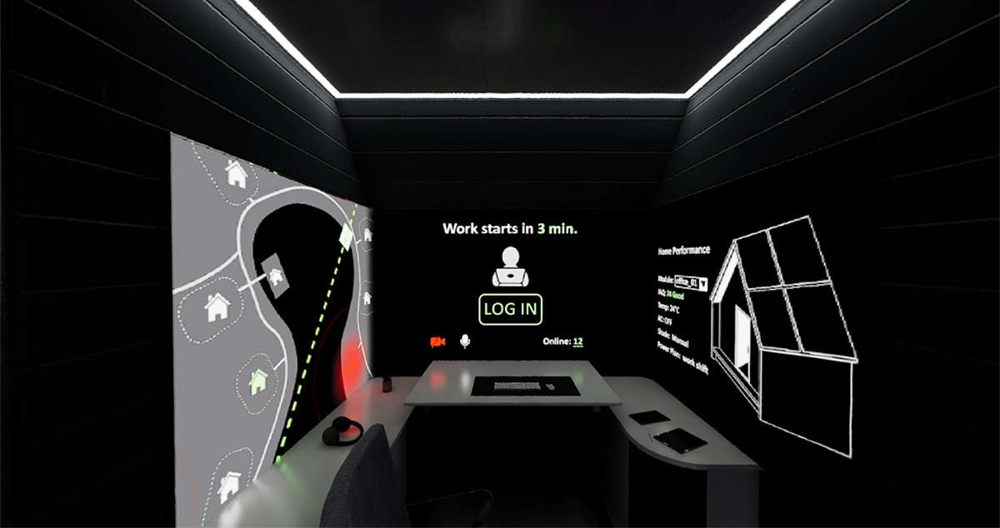
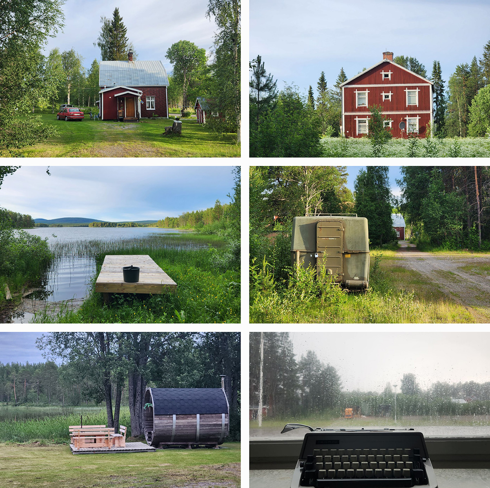
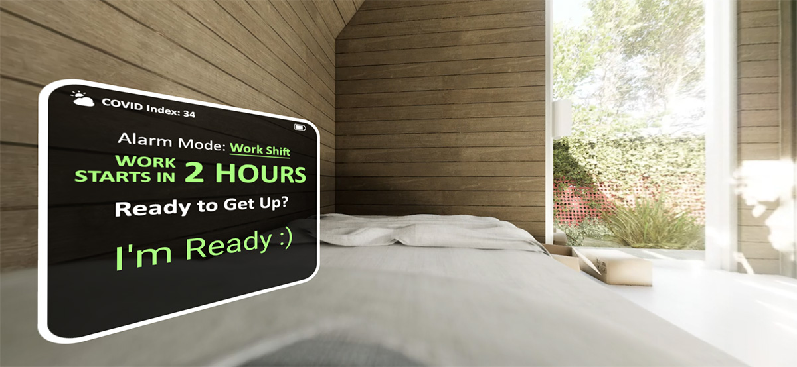
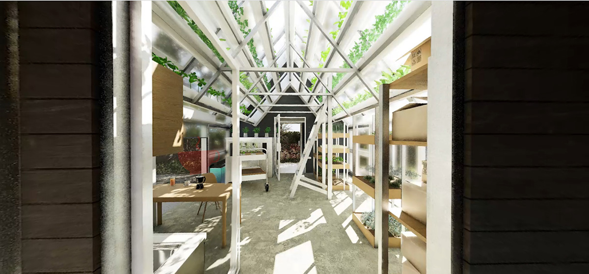
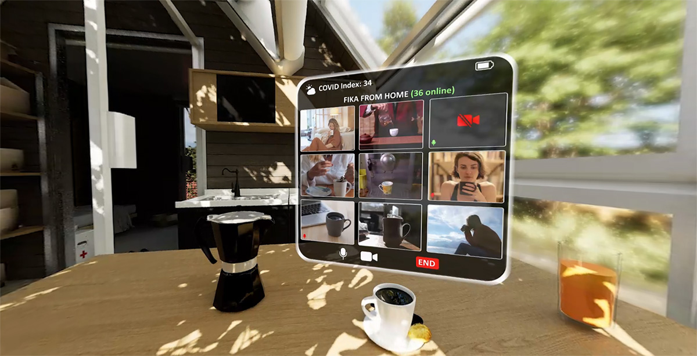
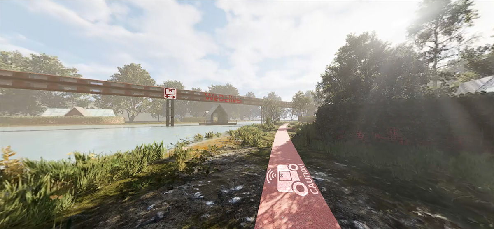
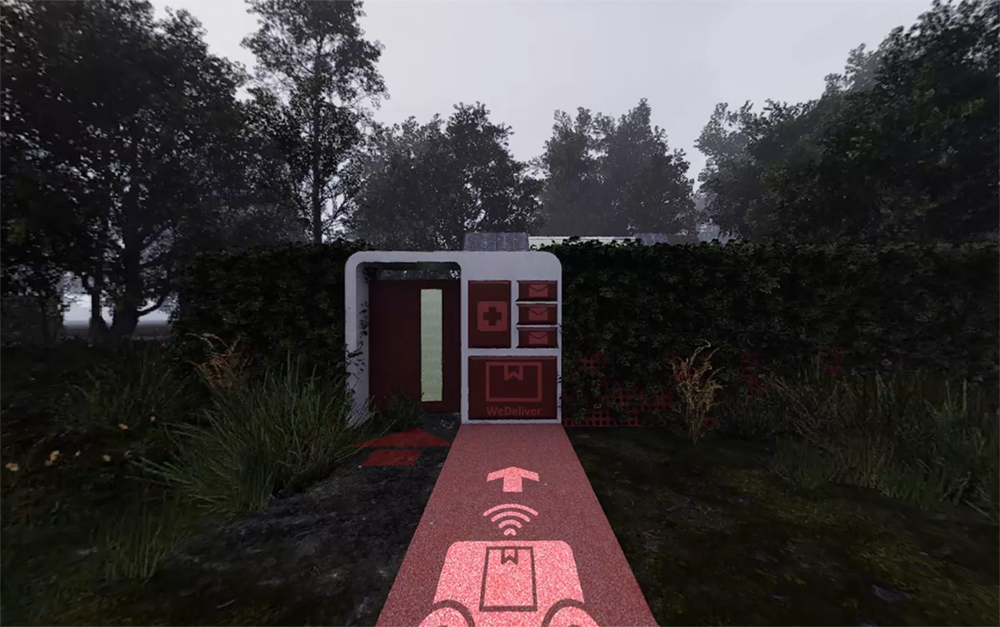

WAKE UP FROM 2020
Work from home, social distancing, sustainable isolation, contactless delivery… As the world gradually restarts from COVID-19,
these once-enforced concepts of future life rapidly fade from public discussions, like a nightmare from an accidental hangover.
Conversely, what if the end of the pandemic was merely a daydream we found ourselves in, while the 2020 versions of the future continued
to develop in a parallel universe?
Taking architectural concepts as visual carriers of such a parallel universe, this immersive art glimpses into a summer workday of
a social-distancing community in rural Sweden, where you struggle with the pandemic-ending daydream.
Relevant inspirations come from the (unrealized) future visions of 2020 media archives and the Swedish rural environment of
Moskosel Creative Lab where I produced this work during my 2023 summer residency.
By revisiting the radical concepts of fears and wonders from our recent collective memory, the project aims to remind us of the plasticity
of human progresses and motivate the cultural capacity of public imagination against the next challenges of this increasingly complicated
world.
The project is supported by Swedish Arts Council, Arvidsjaur Municipality, and Moskosel Creative Lab under the iM_Konsthall 2023 mobile exhibition schemes.
The full VR version is currently being displayed on the Meta Quest 2 headsets at iM_Konsthall exhibitions.
The Web-VR demo below is reproduced in A-Frame, Javascript, and HTML5. Mobile device access is recommended for touch-based interaction.
please try refreshing the page.
Or click
HERE
Demo Clip
Local Inspirations and Clips
    